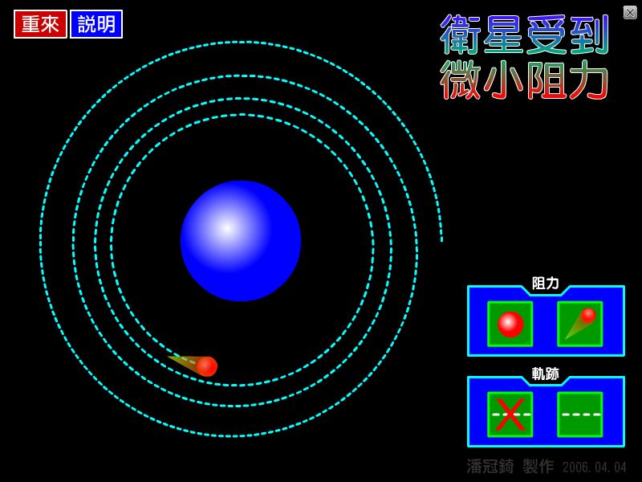

參考書上常見的例題： 一衛星繞地球作圓軌道運動，若衛星受一微小的空氣阻力作用， 則下列何者會漸漸增加？(A)動能(B)位能(C)速率(D)軌道半徑(E)角動量 我也很好奇受微小阻力的衛星會如何運動，於是做了這個動畫，一起來看看吧！ 動畫中你可以選擇是否讓衛星受到阻力，也可以選擇是否讓衛星顯示軌跡。 看完動畫，想一想，為何會這樣？上面的例題答案是什麼？

↑動畫截圖。
檔案下載
[PC exe]